Competitive theory studies price-taking consumers and firms—that is, people who can’t individually affect the transaction prices. The assumption that market participants take prices as given is justified only when there are many competing participants. We have also examined monopoly, precisely because a monopoly, by definition, doesn’t have to worry about competitors. Strategic behavior involves the examination of the intermediate case, where there are few enough participants that they take each other into account—and their actions individually matter—so that the behavior of any one participant influences choices of the other participants. That is, participants are strategic in their choices of action, recognizing that their choices will affect choices made by others.
The right tool for the job of examining strategic behavior in economic circumstances is game theory, the study of how people play games. Game theory was pioneered by the mathematical genius John von Neumann (1903–1957). Game theory has also been very influential in the study of military strategy; and, indeed, the strategy of the cold war between the United States and the Soviet Union was guided by game-theoretic analyses.An important reference for game theory is John von Neumann (1903–1957) and Oskar Morgenstern (1902–1977), Theory of Games and Economic Behavior (Princeton, NJ: Princeton University Press, 1944). Important extensions were introduced by John Nash (1928–), the mathematician made famous by Sylvia Nasar’s delightful book, A Beautiful Mind (Simon & Schuster, 1998). Finally, applications in the military arena were pioneered by Nobel laureate Thomas Schelling (1921–), The Strategy of Conflict (Cambridge: Cambridge University Press, 1960).
The theory provides a description that fits common games like poker or the board game Monopoly, but will cover many other situations as well. In any game, there is a list of players. Games generally unfold over time; at each moment in time, players have information—possibly incomplete—about the current state of play and a set of actions they can take. Both information and actions may depend on the history of the game prior to that moment. Finally, players have payoffs and are assumed to play in such a way as to maximize their anticipated payoff, taking into account their expectations for the play of others. When the players, their information and available actions, and payoffs have been specified, we have a game.
The simplest game is called a matrix payoff game with two players. In a matrix payoff gameGame in which all actions are chosen simultaneously., all actions are chosen simultaneously. It is conventional to describe a matrix payoff game as played by a row player and a column player. The row player chooses a row in a matrix; the column player simultaneously chooses a column. The outcome of the game is a pair of payoffs where the first entry is the payoff of the row player, and the second is the payoff of the column player. Figure 16.1 "The prisoner’s dilemma" provides an example of a “2 × 2” matrix payoff game—the most famous game of all—which is known as the prisoner’s dilemmaGame in which the strategies are to confess or not to confess; the first player to confess avoids jail.. In the game, the strategies are to confess or not to confess.
Figure 16.1 The prisoner’s dilemma

In the prisoner’s dilemma, two criminals named Row and Column have been apprehended by the police and are being questioned separately. They are jointly guilty of the crime. Each player can choose either to confess or not. If Row confesses, we are in the top row of the matrix (corresponding to the row labeled “Confess”). Similarly, if Column confesses, the payoff will be in the relevant column. In this case, if only one player confesses, that player goes free and the other serves 20 years in jail. (The entries correspond to the number of years lost to prison. The first entry is always Row’s payoff; the second entry is Column’s payoff.) Thus, for example, if Column confesses and Row does not, the relevant payoff is the first column and the second row.
Figure 16.2 Solving the prisoner’s dilemma

If Column confesses and Row does not, Row loses 20 years, and Column loses no years; that is, it goes free. This is the payoff (–20, 0) in reverse color in Figure 16.2 "Solving the prisoner’s dilemma". If both confess, they are both convicted and neither goes free, but they only serve 10 years each. Finally, if neither confesses, there is a 10% chance that they are convicted anyway (using evidence other than the confession), in which case they each average a year lost.
The prisoner’s dilemma is famous partly because it is readily solvable. First, Row has a strict advantage to confessing, no matter what Column is going to do. If Column confesses, Row gets –10 for confessing, –20 for not confessing, and thus is better off confessing. Similarly, if Column doesn’t confess, Row gets 0 for confessing (namely, goes free), –1 for not confessing, and is better off confessing. Either way, no matter what Column does, Row should choose to confess.If Row and Column are friends and care about each other, that should be included as part of the payoffs. Here, there is no honor or friendship among thieves, and Row and Column only care about what they themselves will get. This is called a dominant strategyA strategy that is optimal no matter what the other players do., a strategy that is optimal no matter what the other players do.
The logic is exactly similar for Column: No matter what Row does, Column should choose to confess. That is, Column also has a dominant strategy to confess. To establish this, first consider what Column’s best action is, when Column thinks Row will confess. Then consider Column’s best action when Column thinks Row won’t confess. Either way, Column gets a higher payoff (lower number of years lost to prison) by confessing.
The presence of a dominant strategy makes the prisoner’s dilemma particularly easy to solve. Both players should confess. Note that this gets them 10 years each in prison, and thus isn’t a very good outcome from their perspective; but there is nothing they can do about it in the context of the game, because for each the alternative to serving 10 years is to serve 20 years. This outcome is referred to as (Confess, Confess), where the first entry is the row player’s choice, and the second entry is the column player’s choice.
Figure 16.3 An entry game

Consider an entry game played by Microsoft (the row player) and Piuny (the column player), a small start-up company. Both Microsoft and Piuny are thinking about entering a new market for an online service. Figure 16.3 "An entry game" provides the payoff structure.
In this case, if both companies enter, Microsoft ultimately wins the market, earning 2 and Piuny loses 2. If either firm has the market to itself, it gets 5 and the other firm gets zero. If neither enters, they both get zero. Microsoft has a dominant strategy to enter: It gets 2 when Piuny enters, 5 when Piuny doesn’t, and in both cases it does better than when it doesn’t enter. In contrast, Piuny does not have a dominant strategy: Piuny wants to enter when Microsoft doesn’t, and vice versa. That is, Piuny’s optimal strategy depends upon Microsoft’s action; or, more accurately, Piuny’s optimal strategy depends upon what Piuny believes Microsoft will do.
Piuny can understand Microsoft’s dominant strategy if it knows the payoffs of Microsoft.It isn’t so obvious that one player will know the payoffs of another player, which often causes players to try to signal that they are going to play a certain way—that is, to demonstrate commitment to a particular advantageous strategy. Such topics are taken up in business strategy and managerial economics. Thus, Piuny can conclude that Microsoft is going to enter, and this means that Piuny should not enter. Thus, the equilibrium of the game is for Microsoft to enter and Piuny not to enter. This equilibrium is arrived at by the iterated elimination of dominated strategiesEliminating strategies by sequentially removing strategies that are dominated for a player., eliminating strategies by sequentially removing strategies that are dominated for a player. First, we eliminated Microsoft’s dominated strategy in favor of its dominant strategy. Microsoft had a dominant strategy to enter, which means that the strategy of not entering was dominated by the strategy of entering, so we eliminated the dominated strategy. That leaves a simplified game in which Microsoft enters, as shown in Figure 16.4 "Eliminating a dominated strategy".
Figure 16.4 Eliminating a dominated strategy

In this simplified game, after the elimination of Microsoft’s dominated strategy, Piuny also has a dominant strategy: not to enter. Thus, we iterate and eliminate dominated strategies again—this time eliminating Piuny’s dominated strategies—and wind up with a single outcome: Microsoft enters, and Piuny doesn’t. The iterated elimination of dominated strategies solves the game.A strategy may be dominated not by any particular alternate strategy but by a randomization over other strategies, which is an advanced topic not considered here.
Figure 16.5 "A 3 x 3 game" shows another game, with three strategies for each player.
Figure 16.5 A 3 x 3 game

The process of iterated elimination of dominated strategies is illustrated in Figure 16.6 "Eliminating a dominated strategy" by actually eliminating the rows and columns, as follows. A reverse color (white text on black background) indicates a dominated strategy.
Middle dominates Bottom for Row, yielding:
Figure 16.6 Eliminating a dominated strategy

With Bottom eliminated, Left is now dominated for Column by either Center or Right, which eliminates the Left Column. This is shown in Figure 16.7 "Eliminating another dominated strategy".
Figure 16.7 Eliminating another dominated strategy

With Left and Bottom eliminated, Top now dominates Middle for Row, as shown in Figure 16.8 "Eliminating a third dominated strategy".
Figure 16.8 Eliminating a third dominated strategy

Finally, as shown in Figure 16.9 "Game solved", Column chooses Right over Center, yielding a unique outcome after the iterated elimination of dominated strategies, which is (Top, Right).
Figure 16.9 Game solved

The iterated elimination of dominated strategies is a useful concept, and when it applies, the predicted outcome is usually quite reasonable. Certainly it has the property that no player has an incentive to change his or her behavior given the behavior of others. However, there are games where it doesn’t apply, and these games require the machinery of a Nash equilibrium, named for Nobel laureate John Nash (1928–).
In a Nash equilibriumSituation in which a player chooses the strategy that maximizes his or her expected payoff, given the strategies employed by others., each player chooses the strategy that maximizes his or her expected payoff, given the strategies employed by others. For matrix payoff games with two players, a Nash equilibrium requires that the row chosen maximize the row player’s payoff (given the column chosen by the column player) and the column, in turn, maximize the column player’s payoff (given the row selected by the row player). Let us consider first the prisoner’s dilemma, which we have already seen. Here it is illustrated once again in Figure 16.10 "Prisoner's dilemma again".
Figure 16.10 Prisoner's dilemma again

Given that the row player has chosen to confess, the column player also chooses to confess because –10 is better than –20. Similarly, given that the column player chooses confession, the row player chooses confession because –10 is better than –20. Thus, for both players to confess is a Nash equilibrium. Now let us consider whether any other outcome is a Nash equilibrium. In any other outcome, at least one player is not confessing. But that player could get a higher payoff by confessing, so no other outcome could be a Nash equilibrium.
The logic of dominated strategies extends to Nash equilibrium, except possibly for ties. That is, if a strategy is strictly dominated, it can’t be part of a Nash equilibrium. On the other hand, if it involves a tied value, a strategy may be dominated but still be part of a Nash equilibrium.
The Nash equilibrium is justified as a solution concept for games as follows. First, if the players are playing a Nash equilibrium, no one has an incentive to change his or her play or to rethink his or her strategy. Thus, the Nash equilibrium has a “steady state” in that no one wants to change his or her own strategy given the play of others. Second, other potential outcomes don’t have that property: If an outcome is not a Nash equilibrium, then at least one player has an incentive to change what he or she is doing. Outcomes that aren’t Nash equilibria involve mistakes for at least one player. Thus, sophisticated, intelligent players may be able to deduce each other’s play, and play a Nash equilibrium.
Do people actually play Nash equilibria? This is a controversial topic and mostly beyond the scope of this book, but we’ll consider two well-known games: tic-tac-toe (see, for example, http://www.mcafee.cc/Bin/tictactoe/index.html) and chess. Tic-tac-toe is a relatively simple game, and the equilibrium is a tie. This equilibrium arises because each player has a strategy that prevents the other player from winning, so the outcome is a tie. Young children play tic-tac-toe and eventually learn how to play equilibrium strategies, at which point the game ceases to be very interesting since it just repeats the same outcome. In contrast, it is known that chess has an equilibrium, but no one knows what it is. Thus, at this point, we don’t know if the first mover (white) always wins, or if the second mover (black) always wins, or if the outcome is a draw (neither is able to win). Chess is complicated because a strategy must specify what actions to take, given the history of actions, and there are a very large number of potential histories of the game 30 or 40 moves after the start. So we can be quite confident that people are not (yet) playing Nash equilibria to the game of chess.
The second most famous game in game theory is a coordination game called the battle of the sexesA coordination game that involves a married couple who are going to meet each other after work but haven’t decided where they are meeting.. The battle of the sexes involves a married couple who are going to meet each other after work but haven’t decided where they are meeting. Their options are a Baseball game or the Ballet. Both prefer to be with each other, but the Man prefers the Baseball game and the Woman prefers the Ballet. This gives payoffs as shown in Figure 16.11 "The battle of the sexes".
Figure 16.11 The battle of the sexes

The Man would prefer that they both go to the Baseball game, and the Woman prefers that both go to the Ballet. They each get 2 payoff points for being with each other, and an additional point for being at their preferred entertainment. In this game, iterated elimination of dominated strategies eliminates nothing. One can readily verify that there are two Nash equilibria: one in which they both go to the Baseball game and one in which they both go to the Ballet. The logic is this: If the Man is going to the Baseball game, the Woman prefers the 2 points she gets at the Baseball game to the single point she would get at the Ballet. Similarly, if the Woman is going to the Baseball game, the Man gets three points going there versus zero at the Ballet. Hence, going to the Baseball game is one Nash equilibrium. It is straightforward to show that for both to go to the Ballet is also a Nash equilibrium and, finally, that neither of the other two possibilities in which they go to separate places is an equilibrium.
Now consider the game of matching penniesA child’s game in which the sum of the payoffs is zero., a child’s game in which the sum of the payoffs is zero. In this game, both the row player and the column player choose heads or tails, and if they match, the row player gets the coins, while if they don’t match, the column player gets the coins. The payoffs are provided in Figure 16.12 "Matching pennies".
Figure 16.12 Matching pennies

You can readily verify that none of the four possibilities represents a Nash equilibrium. Any of the four involves one player getting –1; that player can convert –1 to 1 by changing his or her strategy. Thus, whatever the hypothesized equilibrium, one player can do strictly better, contradicting the hypothesis of a Nash equilibrium. In this game, as every child who plays it knows, it pays to be unpredictable, and consequently players need to randomize. Random strategies are known as mixed strategiesRandom strategies. because the players mix across various actions.
Let us consider the matching pennies game again, as illustrated in Figure 16.13 "Matching pennies again".
Figure 16.13 Matching pennies again
Suppose that Row believes Column plays Heads with probability p. Then if Row plays Heads, Row gets 1 with probability p and –1 with probability (1 – p), for an expected value of 2p – 1. Similarly, if Row plays Tails, Row gets –1 with probability p (when Column plays Heads), and 1 with probability (1 – p), for an expected value of 1 – 2p. This is summarized in Figure 16.14 "Mixed strategy in matching pennies".
If 2p – 1 > 1 – 2p, then Row is better off, on average, playing Heads than Tails. Similarly, if 2p – 1 < 1 – 2p, then Row is better off playing Tails than Heads. If, on the other hand, 2p – 1 = 1 – 2p, then Row gets the same payoff no matter what Row does. In this case, Row could play Heads, could play Tails, or could flip a coin and randomize Row’s play.
A mixed strategy Nash equilibriumA Nash equilibrium in which at least one player plays a randomized strategy and no player is able to increase his or her expected payoff by playing an alternate strategy. involves at least one player playing a randomized strategy and no player being able to increase his or her expected payoff by playing an alternate strategy. A Nash equilibrium in which no player randomizes is called a pure strategy Nash equilibriumA Nash equilibrium in which no player randomizes..
Figure 16.14 Mixed strategy in matching pennies
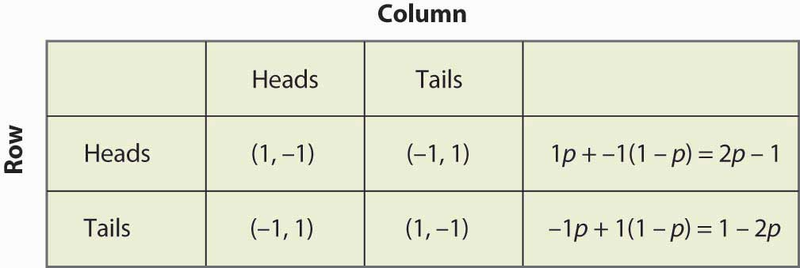Note that randomization requires equality of expected payoffs. If a player is supposed to randomize over strategy A or strategy B, then both of these strategies must produce the same expected payoff. Otherwise, the player would prefer one of them and wouldn’t play the other.
Computing a mixed strategy has one element that often appears confusing. Suppose that Row is going to randomize. Then Row’s payoffs must be equal for all strategies that Row plays with positive probability. But that equality in Row’s payoffs doesn’t determine the probabilities with which Row plays the various rows. Instead, that equality in Row’s payoffs will determine the probabilities with which Column plays the various columns. The reason is that it is Column’s probabilities that determine the expected payoffs for Row; if Row is going to randomize, then Column’s probabilities must be such that Row is willing to randomize.
Thus, for example, we computed the payoff to Row of playing Heads, which was 2p – 1, where p was the probability that Column played Heads. Similarly, the payoff to Row of playing Tails was 1 – 2p. Row is willing to randomize if these are equal, which solves for p = ½.
Now let’s try a somewhat more challenging example and revisit the battle of the sexes. Figure 16.15 "Mixed strategy in battle of the sexes" illustrates the payoffs once again.
Figure 16.15 Mixed strategy in battle of the sexes
This game has two pure strategy Nash equilibria: (Baseball, Baseball) and (Ballet, Ballet). Is there a mixed strategy? To compute a mixed strategy, let the Woman go to the Baseball game with probability p, and the Man go to the Baseball game with probability q. Figure 16.16 "Full computation of the mixed strategy" contains the computation of the mixed strategy payoffs for each player.
Figure 16.16 Full computation of the mixed strategy
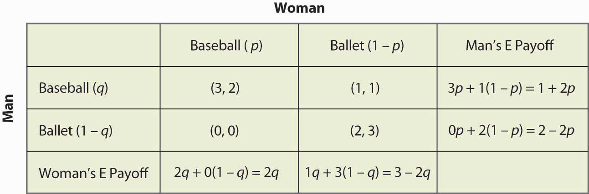For example, if the Man (row player) goes to the Baseball game, he gets 3 when the Woman goes to the Baseball game (probability p), and otherwise gets 1, for an expected payoff of 3p + 1(1 – p) = 1 + 2p. The other calculations are similar, but you should definitely run through the logic and verify each calculation.
A mixed strategy in the battle of the sexes game requires both parties to randomize (since a pure strategy by either party prevents randomization by the other). The Man’s indifference between going to the Baseball game and to the Ballet requires 1 + 2p = 2 – 2p, which yields p = ¼. That is, the Man will be willing to randomize which event he attends if the Woman is going to the Ballet ¾ of the time, and otherwise to the Baseball game. This makes the Man indifferent between the two events because he prefers to be with the Woman, but he also likes to be at the Baseball game. To make up for the advantage that the game holds for him, the Woman has to be at the Ballet more often.
Similarly, in order for the Woman to randomize, the Woman must get equal payoffs from going to the Baseball game and going to the Ballet, which requires 2q = 3 – 2q, or q = ¾. Thus, the probability that the Man goes to the Baseball game is ¾, and he goes to the Ballet ¼ of the time. These are independent probabilities, so to get the probability that both go to the Baseball game, we multiply the probabilities, which yields 3/16. Figure 16.17 "Mixed strategy probabilities" fills in the probabilities for all four possible outcomes.
Figure 16.17 Mixed strategy probabilities
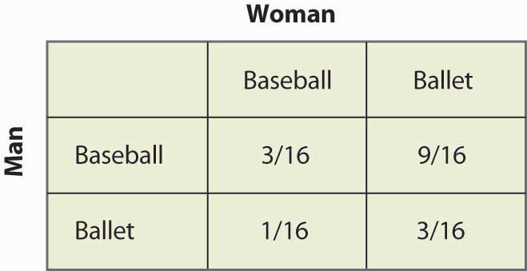Note that more than half of the time (Baseball, Ballet) is the outcome of the mixed strategy and the two people are not together. This lack of coordination is generally a feature of mixed strategy equilibria. The expected payoffs for both players are readily computed as well. The Man’s payoff is 1 + 2p = 2 – 2p, and since p = ¼, the Man obtains 1½. A similar calculation shows that the Woman’s payoff is the same. Thus, both do worse than coordinating on their less preferred outcome. But this mixed strategy Nash equilibrium, undesirable as it may seem, is a Nash equilibrium in the sense that neither party can improve his or her own payoff, given the behavior of the other party.
In the battle of the sexes, the mixed strategy Nash equilibrium may seem unlikely; and we might expect the couple to coordinate more effectively. Indeed, a simple call on the telephone should rule out the mixed strategy. So let’s consider another game related to the battle of the sexes, where a failure of coordination makes more sense. This is the game of “chicken.” In this game, two players drive toward one another, trying to convince the other to yield and ultimately swerve into a ditch. If both swerve into the ditch, we’ll call the outcome a draw and both get zero. If one swerves and the other doesn’t, the driver who swerves loses and the other driver wins, and we’ll give the winner one point.Note that adding a constant to a player’s payoffs, or multiplying that player’s payoffs by a positive constant, doesn’t affect the Nash equilibria—pure or mixed. Therefore, we can always let one outcome for each player be zero, and another outcome be one. The only remaining question is what happens when neither yield, in which case a crash results. In this version, the payoff has been set at four times the loss of swerving, as shown in Figure 16.18 "Chicken", but you can change the game and see what happens.
Figure 16.18 Chicken
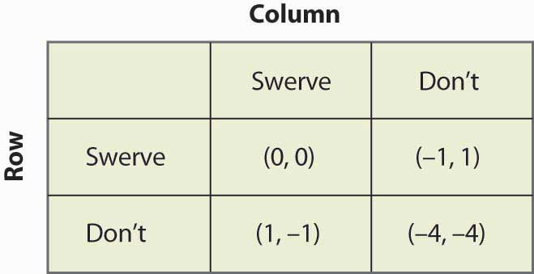This game has two pure strategy equilibria: (Swerve, Don’t) and (Don’t, Swerve). In addition, it has a mixed strategy. Suppose that Column swerves with probability p. Then Row gets 0p + –1(1 – p) from swerving, 1p + (–4)(1 – p) from not swerving, and Row will randomize if these are equal, which requires p = ¾. That is, the probability that Column swerves in a mixed strategy equilibrium is ¾. You can verify that the row player has the same probability by setting the probability that Row swerves equal to q and computing Column’s expected payoffs. Thus, the probability of a collision is 1/16 in the mixed strategy equilibrium.
The mixed strategy equilibrium is more likely, in some sense, in this game: If the players already knew who was going to yield, they wouldn’t actually need to play the game. The whole point of the game is to find out who will yield, which means that it isn’t known in advance. This means that the mixed strategy equilibrium is, in some sense, the more reasonable equilibrium.
Figure 16.19 Rock, paper, scissors
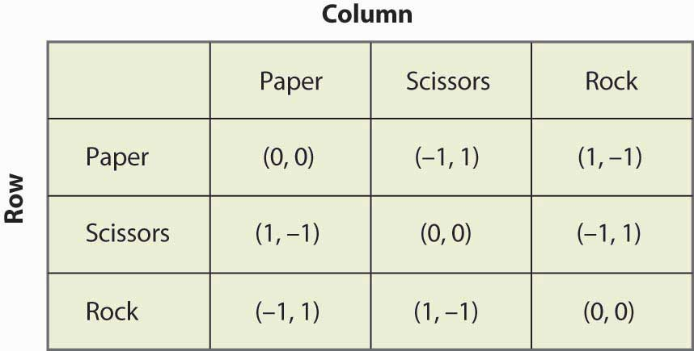“Rock, paper, scissors” is a child’s game in which two children use their hands to simultaneously choose paper (hand held flat), scissors (hand with two fingers protruding to look like scissors), or rock (hand in a fist). The nature of the payoffs is that paper beats rock, rock beats scissors, and scissors beats paper. This game has the structure that is illustrated in Figure 16.19 "Rock, paper, scissors".
Find all equilibria of the following games:
Figure 16.20
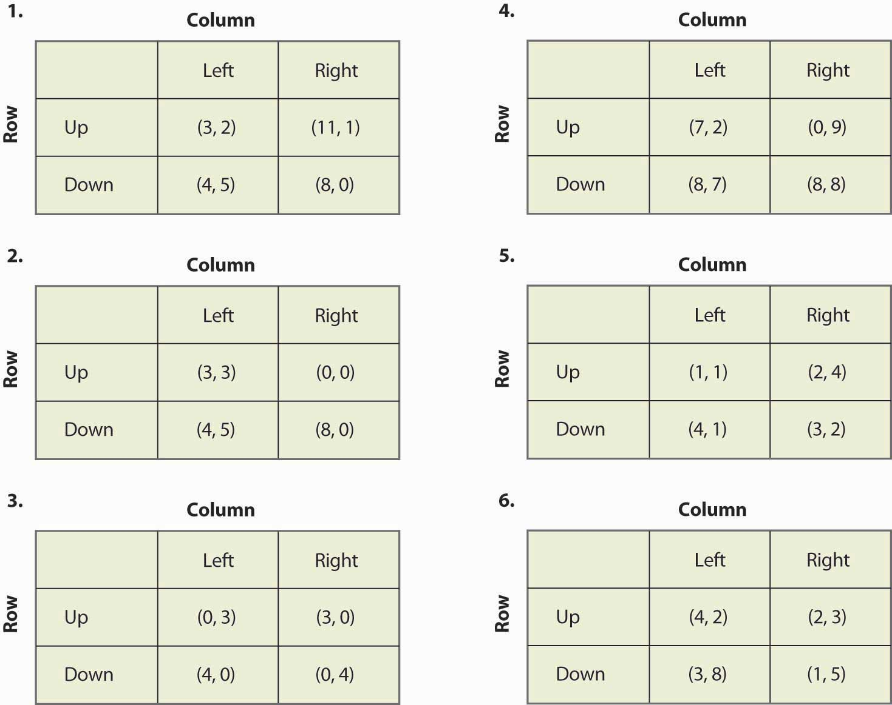Our first example concerns public goods. In this game, each player can either contribute or not. For example, two roommates can either clean their apartment or not. If they both clean, the apartment is nice. If one cleans, then that roommate does all of the work and the other gets half of the benefits. Finally, if neither cleans, neither is very happy. This suggests the following payoffs as shown in Figure 16.21 "Cleaning the apartment".
Figure 16.21 Cleaning the apartment
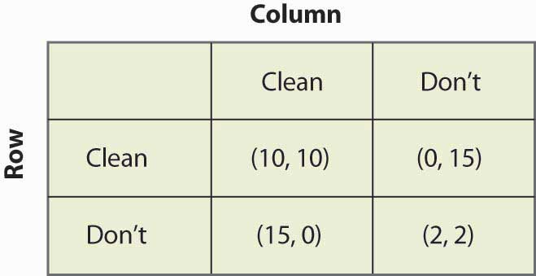You can verify that this game is similar to the prisoner’s dilemma in that the only Nash equilibrium is the pure strategy in which neither player cleans. This is a game-theoretic version of the tragedy of the commons—even though both roommates would be better off if both cleaned, neither do. As a practical matter, roommates do solve this problem, using strategies that we will investigate when we consider dynamic games.
Figure 16.22 Driving on the right
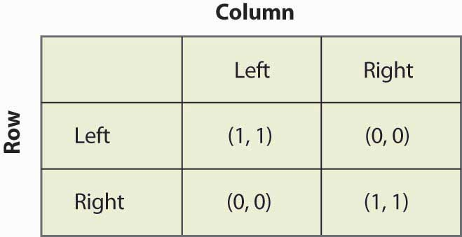As illustrated in Figure 16.22 "Driving on the right", in the “driving on the right” game, the important consideration about which side of the road that cars drive on is not necessarily the right side but the same side. If both players drive on the same side, then they each get one point; otherwise, they get zero. You can readily verify that there are two pure strategy equilibria, (Left, Left) and (Right, Right), and a mixed strategy equilibrium with equal probabilities. Is the mixed strategy reasonable? With automobiles, there is little randomization. On the other hand, people walking down hallways often seem to randomize, whether they pass on the left or the right, and sometimes do that little dance where they try to get past each other—one going left and the other going right, then both simultaneously reversing, unable to get out of each other’s way. That dance suggests that the mixed strategy equilibrium is not as unreasonable as it seems in the automobile application.Continental Europe drove on the left side of the road until about the time of the French Revolution. At that time, some individuals began driving on the right as a challenge to royalty, who were on the left, essentially playing the game of chicken with the ruling class. Driving on the right became a symbol of disrespect for royalty. The challengers won out, forcing a shift to driving on the right. Besides which side one drives on, another coordination game involves whether one stops or goes on red. In some locales, the tendency for a few extra cars to proceed as a traffic light changes from green to yellow to red forces those whose light changes to green to wait; and such a progression can lead to the opposite equilibrium, where one goes on red and stops on green. Under Mao Tse-tung, the Chinese considered changing the equilibrium to proceeding on red and stopping on green (because “red is the color of progress”), but wiser heads prevailed and the plan was scrapped.
Figure 16.23 Bank location game
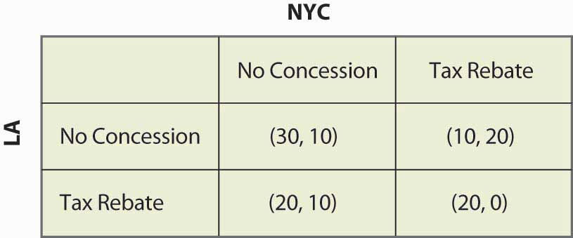Consider a foreign bank that is looking to open a main office and a smaller office in the United States. As shown in Figure 16.23 "Bank location game", the bank narrows its choice for main office to either New York City (NYC) or Los Angeles (LA), and is leaning toward Los Angeles. If neither city does anything, Los Angeles will get $30 million in tax revenue and New York will get $10 million. New York, however, could offer a $10 million rebate, which would swing the main office to New York; but then New York would only get a net of $20 million. The discussions are carried on privately with the bank. Los Angeles could also offer the concession, which would bring the bank back to Los Angeles.
Figure 16.24 Political mudslinging
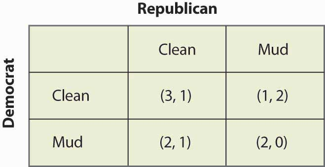On the night before an election, a Democrat is leading the Wisconsin senatorial race. Absent any new developments, the Democrat will win and the Republican will lose. This is worth 3 to the Democrat; and the Republican, who loses honorably, values this outcome at 1. The Republican could decide to run a series of negative advertisements (“throwing mud”) against the Democrat and, if so, the Republican wins—although loses his honor, which he values at 1, and so only gets 2. If the Democrat runs negative ads, again the Democrat wins but loses his honor, so he only gets 2. These outcomes are represented in the mudslinging game shown in Figure 16.24 "Political mudslinging".
You have probably had the experience of trying to avoid encountering someone, whom we will call Rocky. In this instance, Rocky is actually trying to find you. Here it is Saturday night and you are choosing which party, of two possible parties, to attend. You like Party 1 better and, if Rocky goes to the other party, you get 20. If Rocky attends Party 1, you are going to be uncomfortable and get 5. Similarly, Party 2 is worth 15, unless Rocky attends, in which case it is worth 0. Rocky likes Party 2 better (these different preferences may be part of the reason why you are avoiding him), but he is trying to see you. So he values Party 2 at 10, Party 1 at 5, and your presence at the party he attends is worth 10. These values are reflected in Figure 16.25 "Avoiding Rocky".
Figure 16.25 Avoiding Rocky
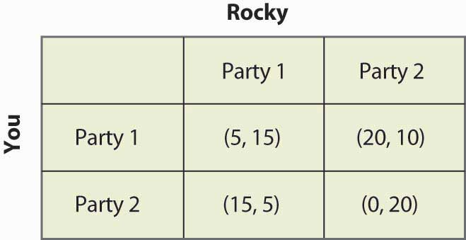Our final example involves two firms competing for customers. These firms can either price High or Low. The most money is made if they both price High; but if one prices Low, it can take most of the business away from the rival. If they both price Low, they make modest profits. This description is reflected in Figure 16.26 "Price cutting game".
Figure 16.26 Price cutting game
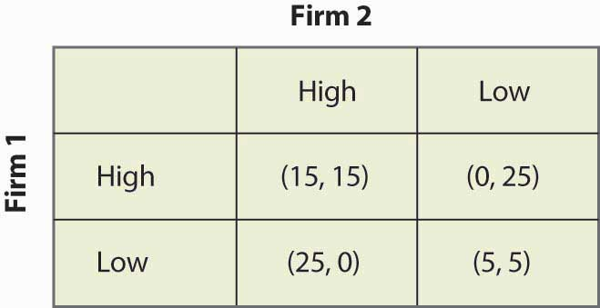So far, we have considered only games that are played simultaneously. Several of these games—notably the price cutting and apartment cleaning games—are actually played over and over again. Other games, like the bank location game, may only be played once, but nevertheless are played over time. Recall the bank location game, as illustrated once again in Figure 16.27 "Bank location game revisited".
Figure 16.27 Bank location game revisited

If neither city offered a Rebate, then Los Angeles won the bidding. So suppose that, instead of the simultaneous move game, first New York City decided whether to offer a Rebate, and then Los Angeles could decide to offer a Rebate. This sequential structure leads to a game that looks like Figure 16.28 "Sequential bank location (NYC payoff listed first)".
In this game, NYC makes the first move and chooses Rebate (to the left) or No Rebate (to the right). If NYC chooses Rebate, LA can then choose Rebate or None. Similarly, if NYC chooses No Rebate, LA can choose Rebate or None. The payoffs [using the standard of (LA, NYC) ordering] are written below the choices.
Figure 16.28 Sequential bank location (NYC payoff listed first)

What NYC would like to do depends upon what NYC believes LA will do. What should NYC believe about LA? (Boy, does that rhetorical question suggest a lot of facetious answers.) The natural belief is that LA will do what is in LA’s best interest. This idea—that each stage of a dynamic game is played in an optimal way—is called subgame perfectionThe idea that every stage of a dynamic game is played in an optimal way..
Subgame perfection requires each player to act in its own best interest, independent of the history of the game.Subgame perfection was introduced by Nobel laureate Reinhard Selten (1930–). This seems very sensible and, in most contexts, it is sensible. In some settings, it may be implausible. Even if I see a player make a particular mistake three times in a row, subgame perfection requires that I must continue to believe that that player will not make the mistake again. Subgame perfection may be implausible in some circumstances, especially when it pays to be considered somewhat crazy.
In the example, subgame perfection requires LA to offer a Rebate when NYC does (since LA gets 20 by rebating vs. 10), and to not offer a Rebate when NYC doesn’t. This is illustrated in the game, as shown in Figure 16.29 "Subgame perfection", using arrows to indicate LA’s choices. In addition, the actions that LA won’t choose have been recolored in a light gray.
Once LA’s subgame perfection choices are taken into account, NYC is presented with the choice of offering a Rebate, in which case it gets 0, or not offering a Rebate, in which case it gets 10. Clearly the optimal choice for NYC is to offer No Rebate, in which case LA doesn’t either; and the result is 30 for LA, and 10 for NYC.
Dynamic games are generally “solved backward” in this way. That is, first establish what the last player does, then figure out—based upon the last player’s expected behavior—what the penultimate player does, and so on.
Figure 16.29 Subgame perfection

We’ll consider one more application of subgame perfection. Suppose, in the game “avoiding Rocky,” that Rocky is actually stalking you and can condition his choice on your choice. Then you might as well go to the party you like best, because Rocky is going to follow you wherever you go. This is represented in Figure 16.30 "Can’t avoid Rocky".
Figure 16.30 Can’t avoid Rocky

Since Rocky’s optimal choice eliminates your best outcomes, you make the best of a bad situation by choosing Party 1. Here, Rocky has a second mover advantageSituation in which choosing second is better than choosing simultaneously.: Rocky’s ability to condition on your choice means that by choosing second he does better than he would do in a simultaneous game. In contrast, a first mover advantageSituation in which choosing first is better than choosing simultaneously. is a situation where choosing first is better than choosing simultaneously. First mover advantages arise when going first influences the second mover advantageously.
What payoffs would players receive if they played this two-player sequential game below? Payoffs are listed in parentheses, with Player 1’s payoffs always listed first. (Note that choosing “in” allows the other player to make a decision, while choosing “out” ends the game.)
Figure 16.31

Consider the following game:
Figure 16.32

Some situations, like the price-cutting game or the apartment cleaning game, are played over and over. Such situations are best modeled as a supergameA game that is repeated an infinite number of times..The supergame was invented by Robert Aumann (1930–) in 1959. A supergame is a game that is played an infinite number of times, where the players discount the future. The game played each time is known as a stage gameThe game that is repeated in a supergame.. Generally supergames are played in times 1, 2, 3, ….
Cooperation may be possible in supergames, if the future is important enough. Consider the price-cutting game introduced previously and illustrated again in Figure 16.33 "Price cutting game revisited".
Figure 16.33 Price cutting game revisited

The dominant strategy equilibrium to this game is (Low, Low). It is clearly a subgame perfect equilibrium for the players to just play (Low, Low) over and over again because, if that is what Firm 1 thinks that Firm 2 is doing, Firm 1 does best by pricing Low, and vice versa. But that is not the only equilibrium to the supergame.
Consider the following strategy, called a grim trigger strategyStrategy that involves being nice initially but not nice forever when someone else isn’t cooperative., which involves being nice initially but not nice forever when someone else isn’t cooperative. Price High, until you see your rival price Low. After your rival has priced Low, price Low forever. This is called a trigger strategy because an action of the other player (pricing Low) triggers a change in behavior. It is a grim strategy because it punishes forever.
If your rival uses a grim trigger strategy, what should you do? Basically, your only choice is when to price Low because, once you price Low, your rival will price Low, and then your best choice is also to price Low from then on. Thus, your strategy is to price High up until some point t – 1, and then price Low from time t on. Your rival will price High through t, and price Low from t + 1 on. This gives a payoff to you of 15 from period 1 through t – 1, 25 in period t, and then 5 in period t + 1 on. We can compute the payoff for a discount factor δ:
If –10 + 20δ < 0, it pays to price Low immediately, at t = 0, because it pays to price Low; and the earlier that one prices Low, the higher the present value. If –10 + 20δ > 0, it pays to wait forever to price Low; that is, t = ∞. Thus, in particular, the grim trigger strategy is an optimal strategy for a player when the rival is playing the grim trigger strategy if δ ≥ ½. In other words, cooperation in pricing is a subgame perfect equilibrium if the future is important enough; that is, the discount factor δ is high enough.
The logic of this example is that the promise of future cooperation is valuable when the future itself is valuable, and that promise of future cooperation can be used to induce cooperation today. Thus, Firm 1 doesn’t want to cut price today because that would lead Firm 2 to cut price for the indefinite future. The grim trigger strategy punishes price cutting today with future Low profits.
Supergames offer more scope for cooperation than is illustrated in the price-cutting game. First, more complex behavior is possible. For example, consider the game shown in Figure 16.34 "A variation of the price-cutting game":
Figure 16.34 A variation of the price-cutting game

Here, again, the unique equilibrium in the stage game is (Low, Low). But the difference between this game and the previous game is that the total profits of Firms 1 and 2 are higher in either (High, Low) or (Low, High) than in (High, High). One solution is to alternate between (High, Low) and (Low, High). Such alternation can also be supported as an equilibrium, using the grim trigger strategy—that is, if a firm does anything other than what it is supposed to do in the alternating solution, the firms instead play (Low, Low) forever.
The folk theoremA theorem stating that if the value of the future is high enough, any outcome that is individually rational can be supported as an equilibrium to the supergame. says that if the value of the future is high enough, any outcome that is individually rational can be supported as an equilibrium to the supergame. Individual rationalitySituation in which the outcome offers a present value of profits at least as high as that offered in the worst equilibrium in the stage game from that player’s perspective. for a player in this context means that the outcome offers a present value of profits at least as high as that offered in the worst equilibrium in the stage game from that player’s perspective. Thus, in the price-cutting game, the worst equilibrium of the stage game offered each player 5, so an outcome can be supported if it offers each player at least a running average of 5.
The simple logic of the folk theorem is this. First, any infinite repetition of an equilibrium of the stage game is itself a subgame perfect equilibrium. If everyone expects this repetition of the stage game equilibrium, no one can do better than to play his or her role in the stage game equilibrium every period. Second, any other plan of action can be turned into a subgame perfect equilibrium merely by threatening any agent who deviates from that plan with an infinite repetition of the worst stage game equilibrium from that agent’s perspective. That threat is credible because the repetition of the stage game equilibrium is itself a subgame perfect equilibrium. Given such a grim trigger–type threat, no one wants to deviate from the intended plan.
The folk theorem is a powerful result and shows that there are equilibria to supergames that achieve very good outcomes. The kinds of coordination failures that we saw in the battle of the sexes, and the failure to cooperate in the prisoner’s dilemma, need not arise; and cooperative solutions are possible if the future is sufficiently valuable.
However, it is worth noting some assumptions that have been made in our descriptions of these games—assumptions that matter but are unlikely to be true in practice. First, the players know their own payoffs. Second, they know their rival’s payoffs. They possess a complete description of the available strategies and can calculate the consequences of these strategies—not just for themselves but also for their rivals. Third, each player maximizes his or her expected payoff; they know that their rivals do the same; they know that their rivals know that everyone maximizes; and so on. The economic language for this is the structure of the game, and the players’ preferences are common knowledge. Few real-world games will satisfy these assumptions exactly. Since the success of the grim trigger strategy (and other strategies we haven’t discussed) generally depends upon such knowledge, informational considerations may cause cooperation to break down. Finally, the folk theorem shows us that there are lots of equilibria to supergames but provides no guidance on which ones will be played. These assumptions can be relaxed, although they may lead to wars on the equilibrium path “by accident”—and a need to recover from such wars—so that the grim trigger strategy becomes suboptimal.